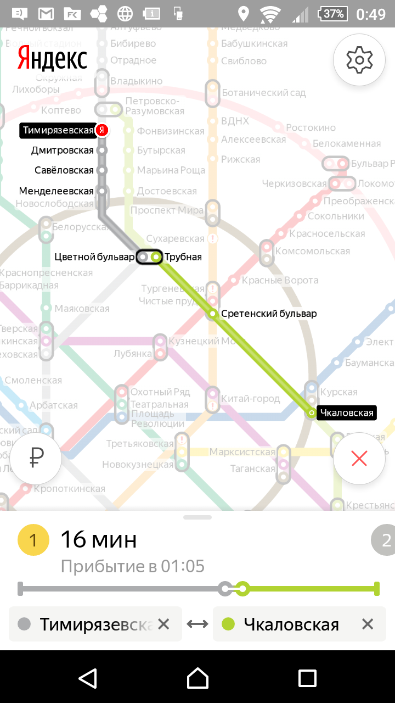
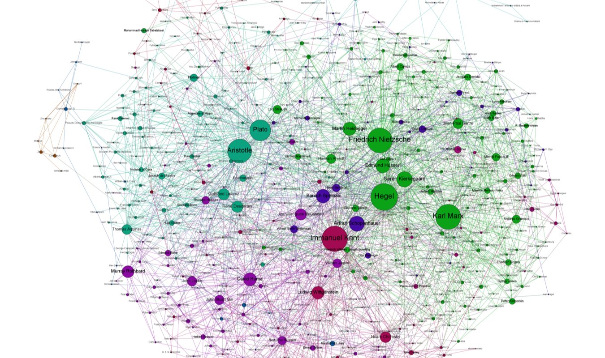
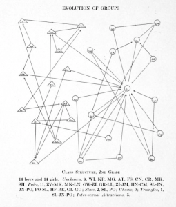
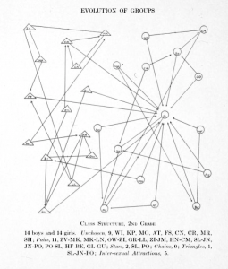
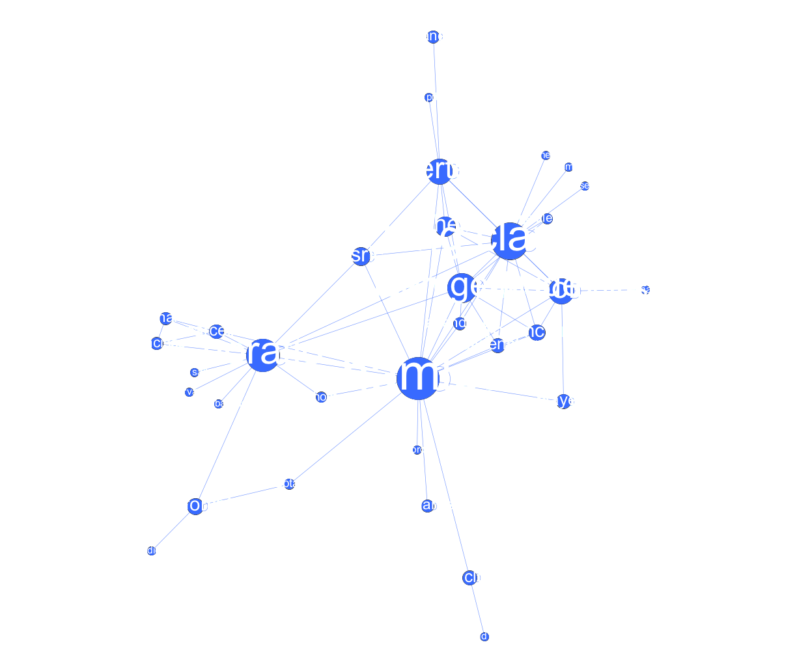
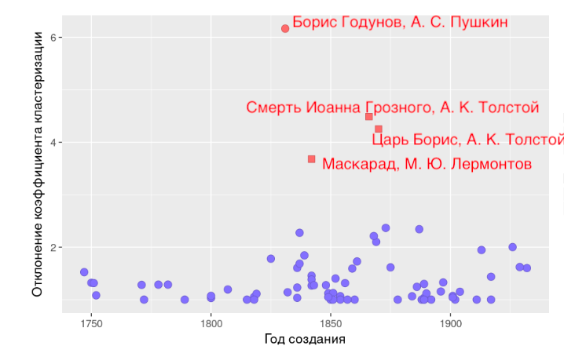

Сетевой анализ
...в исследовании языка и культуры
Эту презентацию лучше не листать стрелочками
Вперед ПРОБЕЛОМ, назад — ШИФТ+ПРОБЕЛОМ
Что сейчас будет
- Сеть (граф) как модель
- Что можно превратить в сеть и исследовать как сеть?
- Cети (графы) вокруг нас
- С кем дружил Бэкон, Пушкин на посылках: сети в гуманитарных науках
Зачем мне это знать
- Вокруг нас одни сплошные сети
- Сетевой анализ используется почти во всех науках
- Сети красивые!
Что за сети?
Сеть (граф)

состоит из узлов...

...и ребер

Что можно представить в виде сети?
Да все что угодно

Cеть авиасообщений
Направленный граф

А вот еще одна транспортная сеть

Откуда он знает, сколько мне ехать?
Взвешенный граф

Эра сетей
Интернет — по определению сеть

Wikipedia тоже
...и конечно, социальные сети

Анализ социальных сетей
Начало в 1930-е: Курт Левин, Джейкоб (Якоб) Морено
 

обновленная версия на сайте Мартина Гражана (Martin Grandjean)
Анализ социальных сетей
Манчестерская школа антропологии (Макс Глакман и другие) в 1950-е

Степень (degree) узла

Степень A = 5
Центральность по посредничеству (betweenness centrality)

Гарвардский прорыв. Те самые шесть рукопожатий

Это придумал Стэнли Милгрэм
Small World Experiment

Small World Experiment

Сетевой анализ в гуманитарных науках
Кто кого знал в Британии 500 лет назад?
- Проект Six Degrees of Francis Bacon (шесть рукопожатий Фрэнсиса Бэкона)
- Более 13.000 человек, более 200.000 связей
- Извлечено из Oxford Dictionary of National Biography
- sixdegreesoffrancisbacon.com
People of Medieval Scotland

Эту презентацию надо листать так:
Вперед ПРОБЕЛОМ, назад — ШИФТ+ПРОБЕЛОМ
Сегодня
- Сети в вымышленных мирах üé§
- –î–µ–ª–∞–µ–º сети —Å–∞–º–∏ üë©‚Äçüíª ü뮂Äçüíª
- ...и –≤–∏–∑—É–∞–ª–∏–∑–∏—Ä—É–µ–º в Gephi üë©‚Äçüíª ü뮂Äçüíª
Сети в вымышленных мирах
Первый пример
Schweizer T., Schnegg M. Die soziale Struktur der. „Simple Storys“: Eine Netzwerkanalyse. (1998)

Социальные сети у Шекспира
Stiller J., Nettle D., Dunbar R.I.M. The small world of Shakespeare’s plays. // Human nature. 2003. 14/4. С. 397–408.

Сети малого мира (Small World)

Те самые шесть рукопожатий
Плотность сетей понижается с увеличением размера
Stiller J., Nettle D., Dunbar R.I.M. The small world of Shakespeare’s plays. // Human nature. 2003. 14/4. С. 397–408.

Вымышленные соцсети не ограничиваются литературой

Сетевой анализ вселенной Marvel
Вселенная Marvel вращается вокруг Капитана Америки
Но это же банально!
Разные соцсети у супергероев и суперзлодеев

Сравнение сетей 60 британских романов
- Elson, D. K., Dames, N. and McKeown, K. (2010), Extracting Social Networks from Literary Fiction, Proceedings of ACL 2010, Uppsala, Sweden.

Анализ сети Гамлета от Франко Моретти

Франко Моретти, «Теория сетей и анализ сюжета» (2011)
Моретти о раскрытии роли Горацио через сети
Though Horatio is an old fixation of mine, I had never fully understood his role in Hamlet until I looked at the play’s network structure.
Franco Moretti. “Distant Reading”

Вспомним про центральности!

Степень Нагрузка/центр.по посредничеству (betweenness)
Переведем в цифры
| Персонаж | Степень | Нагрузка (betweenness) |
|---|---|---|
| Гамлет | 19 | 219,4 |
| Король (Клавдий) | 16 | 131,6 |
| Горацио | 14 | 176,7 |
Визуализируем:

Главная идея Моретти — "дальнее" чтение (distant reading)
Literature scholars should stop reading books and start counting, graphing, and mapping them instead
Moretti, 2005
Масштабирование исследований

тут и глазами можно что-то ухватывать

тут и глазами можно что-то ухватывать

Гете и Шекспир


Но можно и заниматься полноценным компьютерным distant reading
Жанры пьес — и плотности сетей


Плотность = 0.5 (3/6) Плотность = 1 (6/6)
Плотности комедии и трагедии отличаются

Для русских пьес — RusDraCor

rus.dracor.org
RusDraCor: Борис Годунов

Какие русские пьесы обладают свойствами "малого мира"?
Исследование Евгении Устиновой (МИЭМ)
Приглядимся-ка к Борису Годунову
Классицизм против "шекспировской пьесы"


Важный ли герой Гаврила Пушкин?

Пушкин на посылках и betweenness centrality

Битяговский (двойной агент)

Битков (соглядатай/двойник Пушкина)

Плотности комедий и не-комедий в RusDraCor

Осторожно, предварительные данные!
Методология и техника сетевого анализа
(Даня, хватит бла-бла, давай лучше как такое делать)
2 задачи:
- Получить данные о связях персонажей (т.е. извлечь сеть из текста)
- Визуализировать, проанализировать, интерпретировать сеть (здесь очень помогает Gephi)
Чтобы извлечь из текста сеть, нужно понимать...
Что считать узлом?
- Вроде бы персонажа
- Что делать с групповыми персонажами ("Народ", "Все")?
- Повторяющиеся неименованные персонажи ("Другой солдат")
Что считать связью?
Что считать связью? (вот тут сложнее)
- Коммуникация
- Взаимодействия
- Совместные упоминания в тексте
Как мы можем учесть интенсивность взаимдействия/коммуникации?
Взвешенный граф
CSV — cамый простой формат кодирования сетей
Source,Target,Weight Даня,Маша,2 Вася,Петя,15 Вася,Маша,1
Gephi умеет превращать CSV в красоту
Эту CSV-шку можно взять туть
Как можно делать такие CSV (не программируя)?
- В блокноте...
- В любом табличном редакторе
(Excel / Google Sheets / LibreOffice/ OpenOffice) - Ручками в нашем Ezlinavis
Попробуйте построить свою сеть
По любой книжке (художественной, мемуарной...), где есть больше 10 персонажей

Когда ваша сеть готова — импортируйте ее в Gephi
Напоминаю, что есть классная инструкция от Оксаны Дерезы
Заполните Label у узлов, чтобы включить подписи
 ->
->
 ->
->
 ->
->
 ->
->
->
->
Сделайте размер узлов пропорциональным Degree — с помощью вкладки Appearance
Придумайте какой-нибудь атрибут ваших узлов, заполните его — и визуализируйте с помощью цвета! Шаг 1:
Придумайте какой-нибудь атрибут ваших узлов, заполните его — и визуализируйте с помощью цвета! Шаг 2:
Придумайте какой-нибудь атрибут ваших узлов, заполните его — и визуализируйте с помощью цвета! Шаг 3:

Придумайте какой-нибудь атрибут ваших узлов, заполните его — и визуализируйте с помощью цвета! Шаг 4:

Примените какой-нибудь алгоритм укладки
Например, Force Atlas 2 или Fruchterman-Reingold

Для Force Atlas 2 стоит сделать разреженность повыше
Загрузите вашу визуализацию сюда
Продолжаем записываться на доклады!
tinyurl.com/y45as9h8